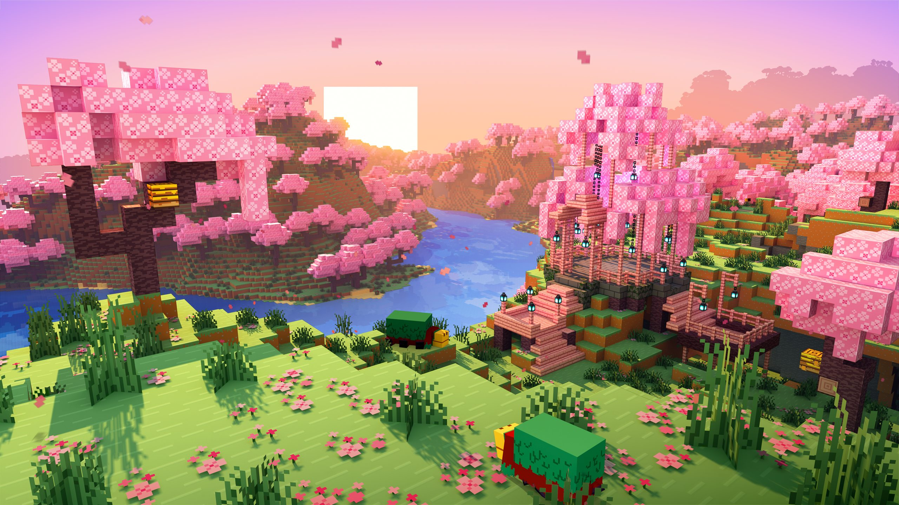
Play sharper.
A free Minecraft client and launcher for Windows. Its own performance engine, a HUD you drag anywhere, friends, voice chat and cosmetics, in 1.8.9, 1.21.1 and 1.21.11.
Fast where it counts
Crimson runs its own performance engine on top of Sodium and Lithium, and keeps 1.8.9 tuned for old-combat PvP.
- FPS, CPS, ping, keystrokes, armour and effects on screen
- Minimap, world map and waypoints
- Zoom, freelook, motion blur
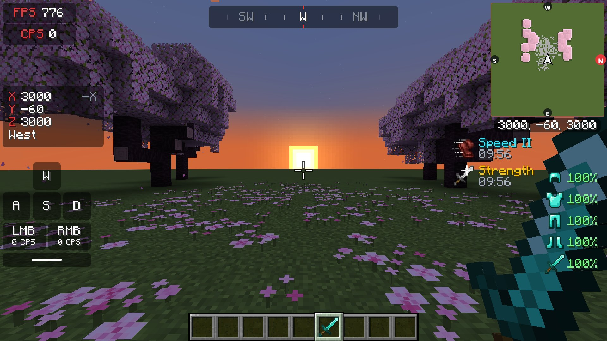
Measured on our test PC; your FPS depends on your hardware.
Look like no one else
Capes with cloth that flows when you run and turn. Wings: Ember, Aurora and Archdevil. Halos, pets that follow you — Crimson Fox and Silver Cat — auras and glowing eyes. All in the wardrobe.
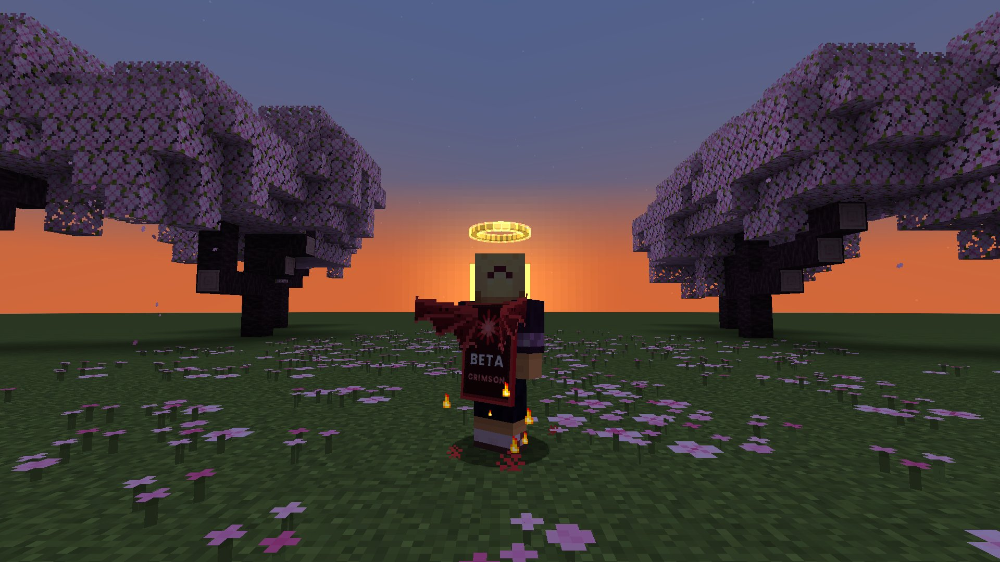
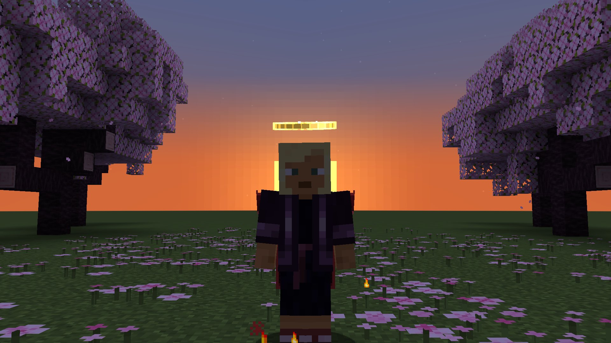
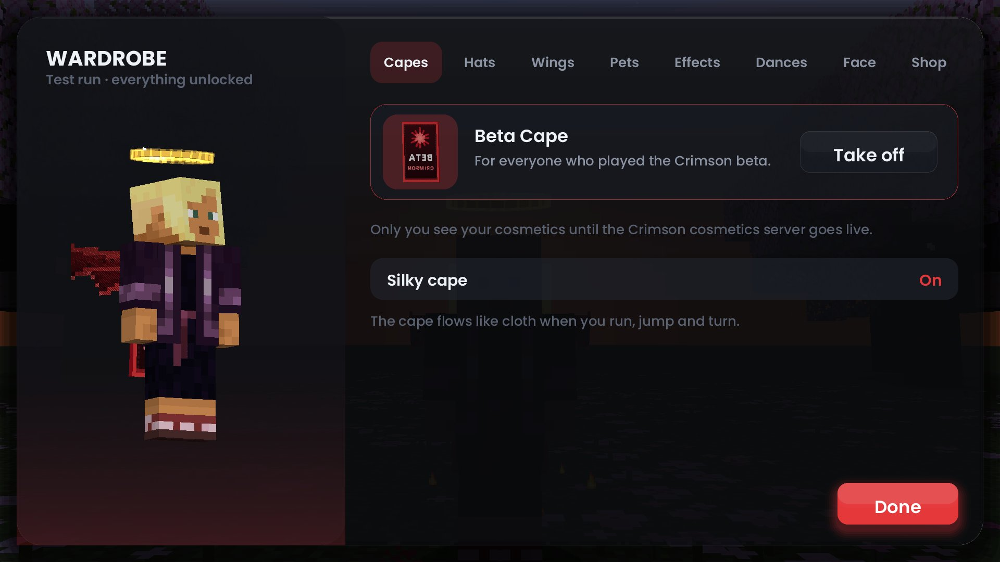
Dances
Dances with their own music. Press B to open the wheel, move to stop, M mutes the music.
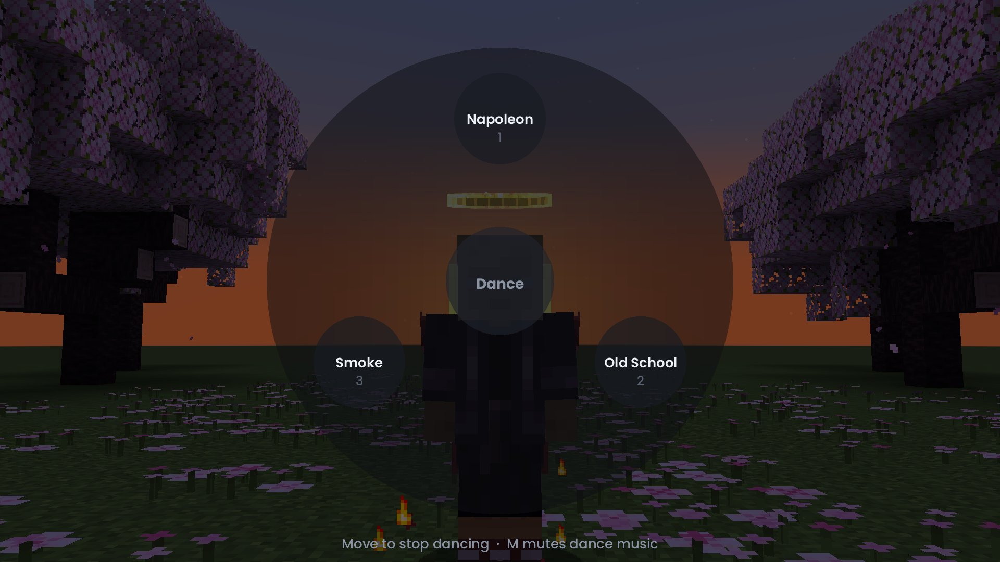
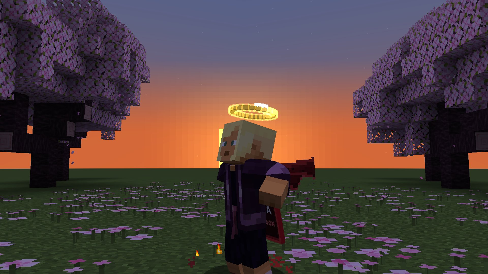
The launcher
Pick a version, add mods, press Play.
- Pick 1.8.9 (Classic PvP), 1.21.1 (Stable) or 1.21.11 (Latest), each with its own mods, settings and worlds
- Add mods from Modrinth and CurseForge, or drop in your own jar
- Performance pack on by default
- Host a server for your friends from the launcher
- Save clips of your best moments with F9
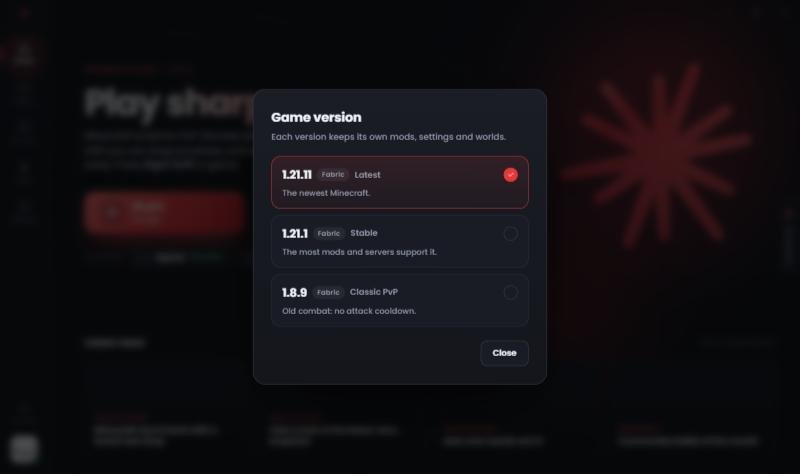
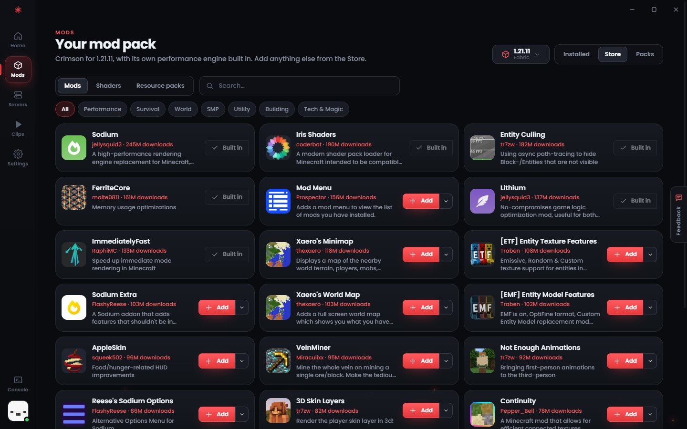
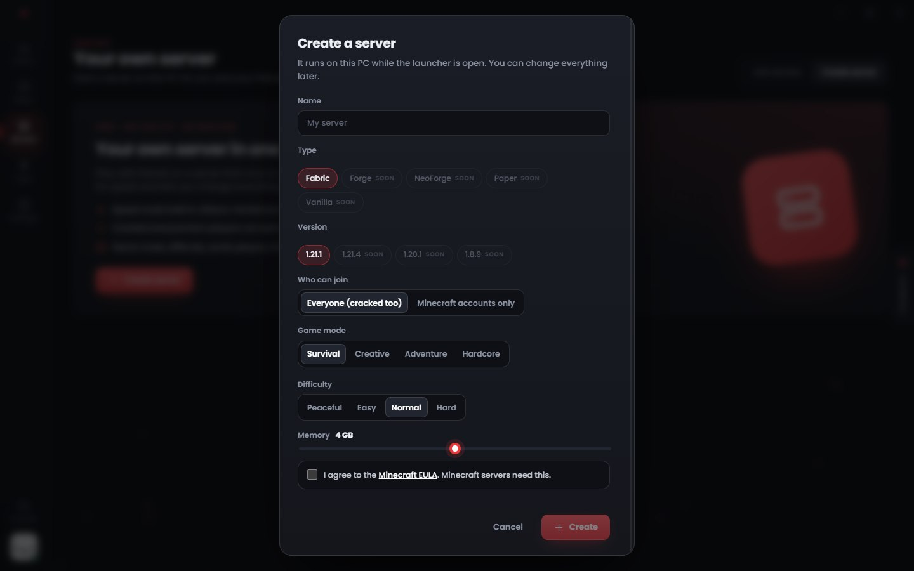
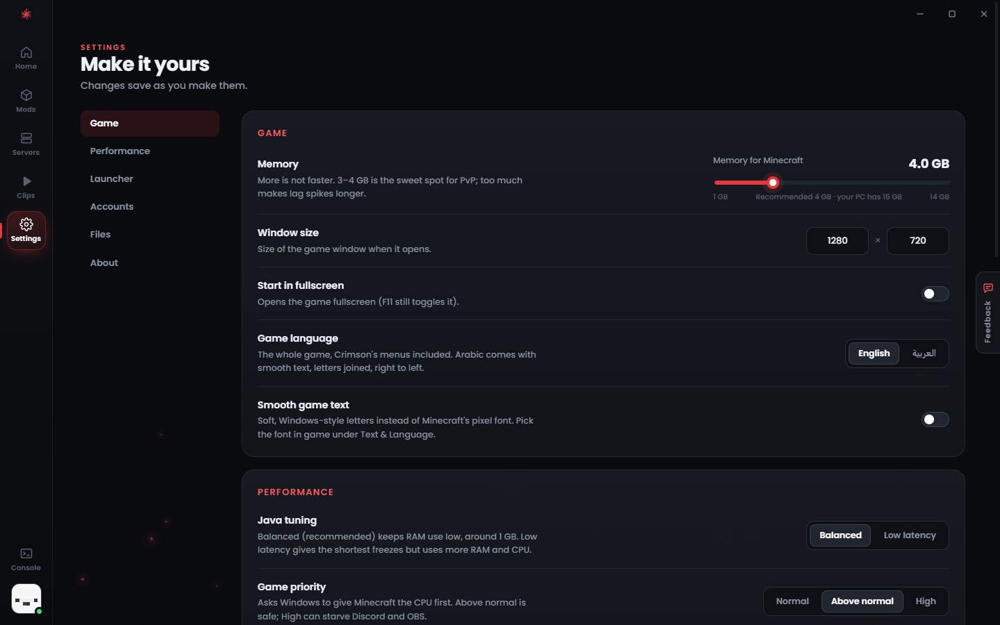
Safe by design
Questions every player should ask a new client, answered.
- Updates are signed.
The launcher only installs updates signed with our key.
- You sign in through Microsoft’s own window.
Crimson never sees your password.
- Your accounts stay on your PC.
Protected by Windows.
- A built-in scanner.
Blocks known account-stealing mods before they run.
- No ads.
No selling your data.
- No cheats.
Reach, knockback and hitboxes are never touched.
- A clean uninstall.
Uninstalling removes everything; your worlds go to the Recycle Bin only if you ask.
A few things you might ask
Is Crimson free?
Is it safe?
Read about safety